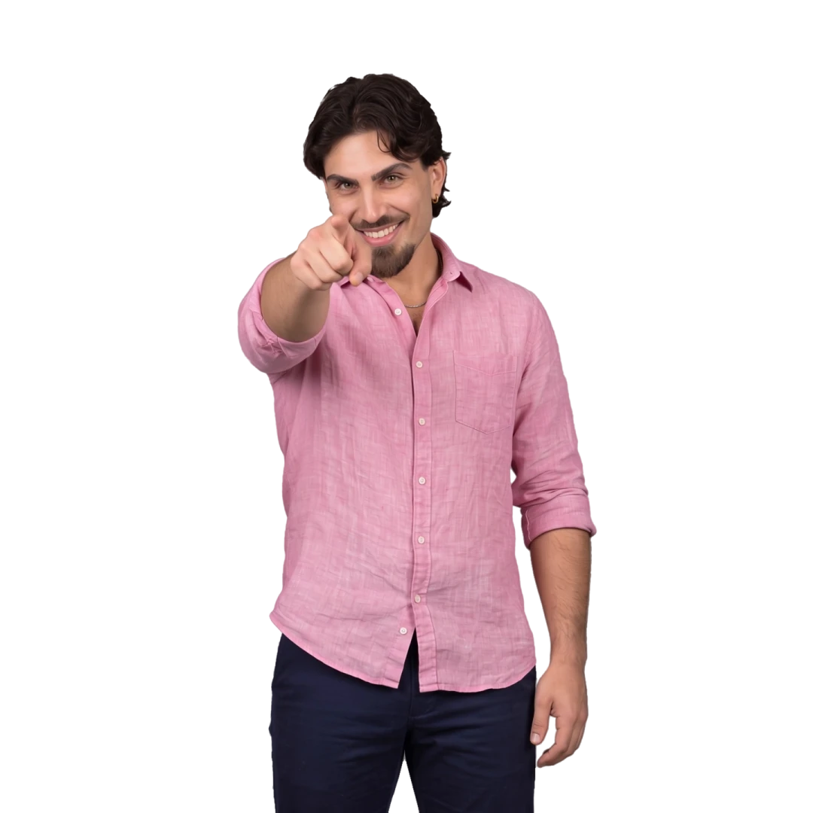
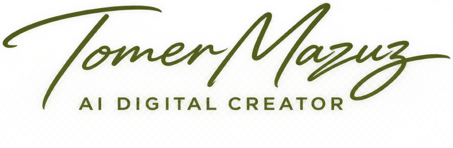

Your idea.
I’ll build it.
בונה אתרים, אפליקציות ומערכות לעסקים, מהרעיון הראשון ועד מוצר שעובד.

לחצו על עבודה כדי לפתוח אותה.

לחוויה המלאה, האתר מוצג לרוחב המסך.
בונה אתרים, אפליקציות ומערכות לעסקים, מהרעיון הראשון ועד מוצר שעובד.

לחצו על עבודה כדי לפתוח אותה.
עיצוב ופיתוח במקום אחד: אתרים, חנויות, אפליקציות ומערכות לעסקים.
עיצוב שנראה טוב ונוח לשימוש, בעברית ובכל מסך.
עיצוב שמותאם לעסק, מהמסך הראשון ועד כפתור הפנייה.
מסכים, זרימות וחוויית שימוש לאפליקציות מובייל.
רענון לאתר, לחנות או לאפליקציה שכבר עובדים, בלי להתחיל מאפס.
ממשק מימין לשמאל שנוח לשימוש גם בטלפון.
פיתוח מקצה לקצה, מהרעיון הראשון ועד מוצר שעובד.
אתרי תדמית, קטלוגים ופורטפוליו, עם חיפוש, סינון וגלריות.
חנות אונליין עם חוויית קנייה נוחה במובייל.
אפליקציות לעסקים, למשל לקביעת תורים ולרשימות המתנה.
תהליכי עבודה כמו חשבוניות, תשלומים ועדכונים ללקוחות.
עוזר דיגיטלי שעונה למבקרים, כמו זה שבאתר הזה.
יש לכם רעיון? ספרו לי עליו.
מהפנייה הראשונה ועד ההשקה, בשלושה שלבים.
אני שומע מה אתם רוצים לבנות, למי זה מיועד ומה הכי חשוב בגרסה הראשונה.
אני מכין מסכים ראשונים כדי שתוכלו לראות איך המוצר ייראה וירגיש ולתת לי פידבק.
אני מפתח את המוצר, נותן לכם גרסה להתנסות בה ומשפר אותה לפי הפידבק לפני ההשקה.
אני רואה חשיבות רבה בכך שהאתר יהיה נוח ושמיש לכל אחד ואחת, כולל אנשים עם מוגבלות.
האתר נבנה לפי ההנחיות של WCAG 2.1 ברמה AA ככל האפשר: ניווט מלא במקלדת, תיאורים טקסטואליים לתמונות, התאמה לקוראי מסך, ניגודיות צבעים, התאמה לטלפונים, ואפשרות לעצור אנימציות. בתפריט הזה אפשר גם להגדיל טקסט, להגביר ניגודיות, להדגיש קישורים ולהחליף לגופן פשוט.
ייתכן שעדיין יש חלקים שאינם נגישים במלואם, כמו חלק מהסרטונים והאנימציות. נתקלתם בבעיה? ספרו לי ואתקן בהקדם:
תומר מזוז · וואטסאפ 050-3232367 · אינסטגרם
עודכן לאחרונה: נובמבר 2026

20 דקות, בטלפון או בזום: מה תרצו לבנות, ואיך מתחילים.
היי, אני העוזר הדיגיטלי של תומר. אפשר לשאול אותי על העבודות שלו או לספר לי מה תרצו לבנות.